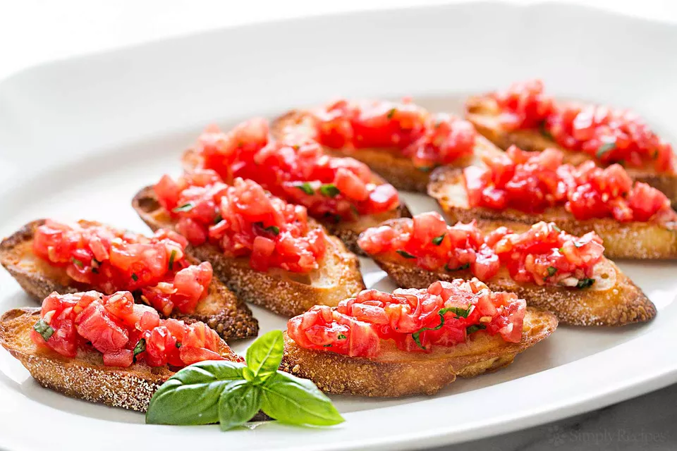

Bruschetta

Description
Bruschetta (Italian pronunciation: [bruˈsketta]) is an antipasto (starter dish) from Italy consisting of grilled bread rubbed with garlic and topped with olive oil and salt. Variations may include toppings of tomato, vegetables, beans, cured meat, or cheese.
Ingredients
- 6 to 7 tomatoes
- 2 cloves garlic
- 1 tbs olive oil
- 1 tsp balsamic vinegar
- 6 to 8fresh basil leaves, chopped
- sea salt
- black pepper
- 1 baguette
Steps
- Preheat oven
- Blanch and peel the tomatoes
- Chop tomatoes, toss them with garlic, olive oil, vinegar, basil, salt and pepper
- Toast the baguette slices
- Serve toasted bread with tomato mixture